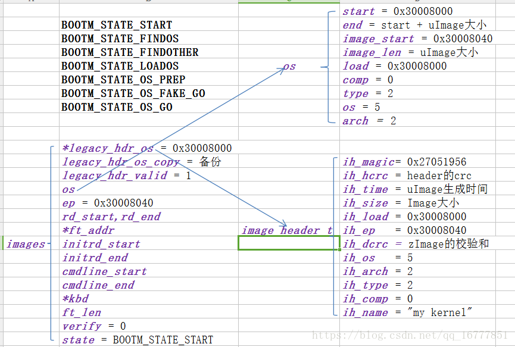

2.4. uboot解析uImage的kernel信息
2.4.1. kernel信息的存放位置
kernel信息主要包括两方面内容:
kernel的镜像信息(包括其加载地址)：放在bootm_headers_t images->image_info_t os中
kernel的入口地址:放在bootm_headers_t images->ulong ep中
详细可以参考 include/image.h
typedef struct bootm_headers {
/*
* Legacy os image header, if it is a multi component image
* then boot_get_ramdisk() and get_fdt() will attempt to get
* data from second and third component accordingly.
*/
image_header_t *legacy_hdr_os; /* image header pointer */
image_header_t legacy_hdr_os_copy; /* header copy */
ulong legacy_hdr_valid;
#if IMAGE_ENABLE_FIT
const char *fit_uname_cfg; /* configuration node unit name */
void *fit_hdr_os; /* os FIT image header */
const char *fit_uname_os; /* os subimage node unit name */
int fit_noffset_os; /* os subimage node offset */
void *fit_hdr_rd; /* init ramdisk FIT image header */
const char *fit_uname_rd; /* init ramdisk subimage node unit name */
int fit_noffset_rd; /* init ramdisk subimage node offset */
void *fit_hdr_fdt; /* FDT blob FIT image header */
const char *fit_uname_fdt; /* FDT blob subimage node unit name */
int fit_noffset_fdt;/* FDT blob subimage node offset */
void *fit_hdr_setup; /* x86 setup FIT image header */
const char *fit_uname_setup; /* x86 setup subimage node name */
int fit_noffset_setup;/* x86 setup subimage node offset */
#endif
#ifndef USE_HOSTCC
image_info_t os; /* os image info */
ulong ep; /* entry point of OS */
ulong rd_start, rd_end;/* ramdisk start/end */
char *ft_addr; /* flat dev tree address */
ulong ft_len; /* length of flat device tree */
ulong initrd_start;
ulong initrd_end;
ulong cmdline_start;
ulong cmdline_end;
bd_t *kbd;
#endif
int verify; /* env_get("verify")[0] != 'n' */
#define BOOTM_STATE_START (0x00000001)
#define BOOTM_STATE_FINDOS (0x00000002)
#define BOOTM_STATE_FINDOTHER (0x00000004)
#define BOOTM_STATE_LOADOS (0x00000008)
#define BOOTM_STATE_RAMDISK (0x00000010)
#define BOOTM_STATE_FDT (0x00000020)
#define BOOTM_STATE_OS_CMDLINE (0x00000040)
#define BOOTM_STATE_OS_BD_T (0x00000080)
#define BOOTM_STATE_OS_PREP (0x00000100)
#define BOOTM_STATE_OS_FAKE_GO (0x00000200) /* 'Almost' run the OS */
#define BOOTM_STATE_OS_GO (0x00000400)
int state;
#ifdef CONFIG_LMB
struct lmb lmb; /* for memory mgmt */
#endif
} bootm_headers_t;
extern bootm_headers_t images;
image_info_t的详细解释如下
typedef struct image_info {
ulong start, end; /* start/end of blob */ //包括附加节点信息之内的整个kernel节点的起始地址和结束地址
ulong image_start, image_len; /* start of image within blob, len of image */ //kernel镜像的起始地址，镜像长度
ulong load; /* load addr for the image */ //镜像的加载地址
uint8_t comp, type, os; /* compression, type of image, os type */ //镜像的压缩格式，镜像类型，操作系统类型
uint8_t arch; /* CPU architecture */ //CPU体系结构
} image_info_t;
image_header数据结构如下
/*
* Legacy format image header,
* all data in network byte order (aka natural aka bigendian).
*/
typedef struct image_header {
__be32 ih_magic; /* Image Header Magic Number */
__be32 ih_hcrc; /* Image Header CRC Checksum */
__be32 ih_time; /* Image Creation Timestamp */
__be32 ih_size; /* Image Data Size */
__be32 ih_load; /* Data Load Address */
__be32 ih_ep; /* Entry Point Address */
__be32 ih_dcrc; /* Image Data CRC Checksum */
uint8_t ih_os; /* Operating System */
uint8_t ih_arch; /* CPU architecture */
uint8_t ih_type; /* Image Type */
uint8_t ih_comp; /* Compression Type */
uint8_t ih_name[IH_NMLEN]; /* Image Name */
} image_header_t;
解析uImage的时候主要目的就是填充image_info_t os和ulong ep
解析完成之后的示例如下

2.4.2. legacy-uImage中kernel信息的解析代码流程
从bootm_find_os入口开始说明，代码位于 common/bootm.c 中
static int bootm_find_os(cmd_tbl_t *cmdtp, int flag, int argc,
char * const argv[])
{
//uImage地址对应传进来的参数argv[0]
const void *os_hdr;
bool ep_found = false;
int ret;
/* get kernel image header, start address and length */
os_hdr = boot_get_kernel(cmdtp, flag, argc, argv,
&images, &images.os.image_start, &images.os.image_len);
//在boot_get_kernel中会设置images.os.image_start和images.os.image_len值
if (images.os.image_len == 0) {
puts("ERROR: can't get kernel image!\n");
return 1;
}
/* get image parameters */
switch (genimg_get_format(os_hdr)) {
#if defined(CONFIG_IMAGE_FORMAT_LEGACY)
case IMAGE_FORMAT_LEGACY:
images.os.type = image_get_type(os_hdr); //从头部中获取各参数值
images.os.comp = image_get_comp(os_hdr);
images.os.os = image_get_os(os_hdr);
images.os.end = image_get_image_end(os_hdr);
images.os.load = image_get_load(os_hdr);
images.os.arch = image_get_arch(os_hdr);
break;
#endif
#if IMAGE_ENABLE_FIT
case IMAGE_FORMAT_FIT:
if (fit_image_get_type(images.fit_hdr_os,
images.fit_noffset_os,
&images.os.type)) {
puts("Can't get image type!\n");
bootstage_error(BOOTSTAGE_ID_FIT_TYPE);
return 1;
}
if (fit_image_get_comp(images.fit_hdr_os,
images.fit_noffset_os,
&images.os.comp)) {
puts("Can't get image compression!\n");
bootstage_error(BOOTSTAGE_ID_FIT_COMPRESSION);
return 1;
}
if (fit_image_get_os(images.fit_hdr_os, images.fit_noffset_os,
&images.os.os)) {
puts("Can't get image OS!\n");
bootstage_error(BOOTSTAGE_ID_FIT_OS);
return 1;
}
if (fit_image_get_arch(images.fit_hdr_os,
images.fit_noffset_os,
&images.os.arch)) {
puts("Can't get image ARCH!\n");
return 1;
}
images.os.end = fit_get_end(images.fit_hdr_os);
if (fit_image_get_load(images.fit_hdr_os, images.fit_noffset_os,
&images.os.load)) {
puts("Can't get image load address!\n");
bootstage_error(BOOTSTAGE_ID_FIT_LOADADDR);
return 1;
}
break;
#endif
#ifdef CONFIG_ANDROID_BOOT_IMAGE
case IMAGE_FORMAT_ANDROID:
images.os.type = IH_TYPE_KERNEL;
images.os.comp = IH_COMP_GZIP;
images.os.os = IH_OS_LINUX;
images.os.end = android_image_get_end(os_hdr);
images.os.load = android_image_get_kload(os_hdr);
images.ep = images.os.load;
ep_found = true;
break;
#endif
default:
puts("ERROR: unknown image format type!\n");
return 1;
}
/* If we have a valid setup.bin, we will use that for entry (x86) */
if (images.os.arch == IH_ARCH_I386 ||
images.os.arch == IH_ARCH_X86_64) {
ulong len;
ret = boot_get_setup(&images, IH_ARCH_I386, &images.ep, &len);
if (ret < 0 && ret != -ENOENT) {
puts("Could not find a valid setup.bin for x86\n");
return 1;
}
/* Kernel entry point is the setup.bin */
} else if (images.legacy_hdr_valid) {
images.ep = image_get_ep(&images.legacy_hdr_os_copy);
#if IMAGE_ENABLE_FIT
} else if (images.fit_uname_os) {
int ret;
ret = fit_image_get_entry(images.fit_hdr_os,
images.fit_noffset_os, &images.ep);
if (ret) {
puts("Can't get entry point property!\n");
return 1;
}
#endif
} else if (!ep_found) {
puts("Could not find kernel entry point!\n");
return 1;
}
if (images.os.type == IH_TYPE_KERNEL_NOLOAD) {
if (CONFIG_IS_ENABLED(CMD_BOOTI) &&
images.os.arch == IH_ARCH_ARM64) {
ulong image_addr;
ulong image_size;
ret = booti_setup(images.os.image_start, &image_addr,
&image_size, true);
if (ret != 0)
return 1;
images.os.type = IH_TYPE_KERNEL;
images.os.load = image_addr;
images.ep = image_addr;
} else {
images.os.load = images.os.image_start;
images.ep += images.os.image_start;
}
}
images.os.start = map_to_sysmem(os_hdr);
return 0;
}
通过上述代码就完成了bootm_header_t images中的image_info_t os和ulong ep成员的实现,这里的核心代码是boot_get_kernel会实现uImage类型的判断以及头部的设置
boot_get_kernel
/**
* boot_get_kernel - find kernel image
* @os_data: pointer to a ulong variable, will hold os data start address
* @os_len: pointer to a ulong variable, will hold os data length
*
* boot_get_kernel() tries to find a kernel image, verifies its integrity
* and locates kernel data.
*
* returns:
* pointer to image header if valid image was found, plus kernel start
* address and length, otherwise NULL
*/
static const void *boot_get_kernel(cmd_tbl_t *cmdtp, int flag, int argc,
char * const argv[], bootm_headers_t *images,
ulong *os_data, ulong *os_len)
{
#if defined(CONFIG_IMAGE_FORMAT_LEGACY)
image_header_t *hdr;
#endif
ulong img_addr;
const void *buf;
const char *fit_uname_config = NULL;
const char *fit_uname_kernel = NULL;
#if IMAGE_ENABLE_FIT
int os_noffset;
#endif
//因为传进来的kernel地址argv[0]是一个字符串类型，所以这里需要将其转换为长整型
img_addr = genimg_get_kernel_addr_fit(argc < 1 ? NULL : argv[0],
&fit_uname_config,
&fit_uname_kernel);
bootstage_mark(BOOTSTAGE_ID_CHECK_MAGIC);
/* check image type, for FIT images get FIT kernel node */
*os_data = *os_len = 0;
buf = map_sysmem(img_addr, 0); //映射到物理地址，因为在uboot中MMU一般是没有打开的，所以这个值不会变化
switch (genimg_get_format(buf)) { //这里根据幻数判断uImage类型
#if defined(CONFIG_IMAGE_FORMAT_LEGACY)
case IMAGE_FORMAT_LEGACY:
printf("## Booting kernel from Legacy Image at %08lx ...\n",
img_addr);
hdr = image_get_kernel(img_addr, images->verify);
if (!hdr)
return NULL;
bootstage_mark(BOOTSTAGE_ID_CHECK_IMAGETYPE);
/* get os_data and os_len */
switch (image_get_type(hdr)) {
case IH_TYPE_KERNEL:
case IH_TYPE_KERNEL_NOLOAD:
*os_data = image_get_data(hdr); //设置镜像地址及长度
*os_len = image_get_data_size(hdr);
break;
case IH_TYPE_MULTI:
image_multi_getimg(hdr, 0, os_data, os_len);
break;
case IH_TYPE_STANDALONE:
*os_data = image_get_data(hdr);
*os_len = image_get_data_size(hdr);
break;
default:
printf("Wrong Image Type for %s command\n",
cmdtp->name);
bootstage_error(BOOTSTAGE_ID_CHECK_IMAGETYPE);
return NULL;
}
/*
* copy image header to allow for image overwrites during
* kernel decompression.
*/
memmove(&images->legacy_hdr_os_copy, hdr,
sizeof(image_header_t));
/* save pointer to image header */
images->legacy_hdr_os = hdr;
images->legacy_hdr_valid = 1;
bootstage_mark(BOOTSTAGE_ID_DECOMP_IMAGE);
break;
#endif
#if IMAGE_ENABLE_FIT
case IMAGE_FORMAT_FIT:
os_noffset = fit_image_load(images, img_addr,
&fit_uname_kernel, &fit_uname_config,
IH_ARCH_DEFAULT, IH_TYPE_KERNEL,
BOOTSTAGE_ID_FIT_KERNEL_START,
FIT_LOAD_IGNORED, os_data, os_len);
if (os_noffset < 0)
return NULL;
images->fit_hdr_os = map_sysmem(img_addr, 0);
images->fit_uname_os = fit_uname_kernel;
images->fit_uname_cfg = fit_uname_config;
images->fit_noffset_os = os_noffset;
break;
#endif
#ifdef CONFIG_ANDROID_BOOT_IMAGE
case IMAGE_FORMAT_ANDROID:
#if !(UBOOT_LOG_OPTIMIZE)
printf("## Booting Android Image at 0x%08lx ...\n", img_addr);
#endif
if (android_image_get_kernel(buf, images->verify,
os_data, os_len))
return NULL;
break;
#endif
default:
printf("Wrong Image Format for %s command\n", cmdtp->name);
bootstage_error(BOOTSTAGE_ID_FIT_KERNEL_INFO);
return NULL;
}
debug(" kernel data at 0x%08lx, len = 0x%08lx (%ld)\n",
*os_data, *os_len, *os_len);
return buf;
}
2.4.3. FIT-uImage中kernel信息的解析
FIT-uImage信息的解析可以参考上述代码的实现